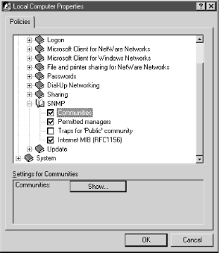
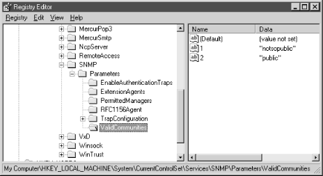

7.3. Agent Configuration Walkthroughs
In the following sections we will walk through the configurations of
some typical SNMP agents. We have chosen devices that are found on
almost every modern network (x86 PCs, Unix Servers, routers, UPSs,
etc.). The point of this discussion isn't to show you how your
particular agent is configured -- that would not be practical,
given the hundreds of devices and vendors out there. Our intent is to
give you a feel for what the common options are, and what steps
you'll typically go through to configure an agent.
7.3.1. Windows 95/98 Agent
In this section, we'll walk through
the SNMP configuration for the Windows 95/98 agent, using the Windows
System Policy Editor. The settings are all stored in the registry, so
you can also make changes to the configuration using
regedit, but there's less chance of error if
you use the System Policy Editor. It's worth noting that
Windows 95, 98, and NT all have the same SNMP entries in the
registry, so configuration for these operating systems is similar.
It's also worth noting that Microsoft's SNMP agent
isn't terribly robust, although it's adequate if you want
only basic SNMP functionality. Other agents are available;
Concord's SystemEDGE and Castle Rock's SNMPc support the
Microsoft operating systems.
WARNING:
Unless you are completely comfortable taking the registry editing
leap, we strongly recommend that you use the System Policy Editor to
make agent configuration changes. Incorrect settings in the registry
can result in serious system problems. Consider yourself warned.
The Windows System Policy Editor comes with
the Windows 95/98 Resource Kit, and must be installed before you can
configure the SNMP agent. The first time you run the System Policy
Editor it will ask you for an
.adm file. Select
C:\WINDOWS\INF \ADMIN.ADM as this file. Select
"File

Open Registry," then double-click the Local
Computer icon. In the Policies tab, click down the plus signs until
you reach Network and then SNMP. This should leave you with four SNMP
agent configuration items.
Figure 7-1 shows what
your window should look like. To enable an option, place a check next
to it. When you are finished, click "OK," then
"File
Save" at the main screen. If you don't
follow these steps, your configuration won't be saved to the
registry.

Figure 7-1. Windows 95/98 System Policy Editor
The
"Communities" settings allow you to define your community
strings. Check the box and then click "Show" in the lower
section. This brings up another window showing your community
strings. To create a new community, click "Add" and then
enter the string. Repeat the steps, if appropriate, for your site. If
this option is left unchecked, or if it is checked but no community
names are listed, the agent will answer all SNMP requests it
receives. The next checkbox item, "Permitted managers,"
specifies what NMSs can access this agent. You can identify your
management stations by IPX addresses, IP addresses, or DNS names. For
example, you can use this item to restrict SNMP access to a
particular NMS. If the "Permitted managers" box is
unchecked or is checked but has no entries, the agent will answer all
requests, no matter where they come from. Checking "Traps for
`Public' community" allows you to designate up to
five NMSs to receive traps. The last setting, "Internet MIB
(RFC1156)," allows you to set the Contact Name
(
sysContact) and Location
(
sysLocation) objects.
Remember to
save your changes using "File
Save" at the main
menu of the System Policy Editor.
Figure 7-2 shows
what the `entries look like in the Registry Editor, after
you've used the Policy Editor to set them.

Figure 7-2. Windows 95/98 Registry Editor
7.3.2. Windows NT 4.0 and Windows 2000 Agent
To configure the SNMP service in
Windows NT 4.0 and 2000, start in the Control Panel and double-click
on the Network icon. Click on the Services tab, select "SNMP
Service," and click on the "Properties" button. If
"SNMP Service" isn't listed, you need to add it.
Press the "Add" button and select "SNMP
Service" from the list of services. It will prompt you for your
Windows NT system disk, so be sure to have it ready. For Windows
2000, go to the Control Panel and click on "Add/Remove
Programs." When the window pops up click on "Add/Remove
Windows Components," then select "Management and
Monitoring Tools." This should bring up a window with one item
in it, "Simple Network Management Protocol." Check the
box next to it and press "OK." This will take you back to
the Components Wizard window. Click "Next" to begin the
installation of the SNMP service. You will probably need your Windows
2000 CD-ROM.
Once you have installed the SNMP service or selected it from the list
of installed services, a new window should appear. This window is
broken up into three tabs: Agent, Traps, and Security. In the Agent
tab, you should configure the Contact
(
sysContact), Location
(
sysLocation), and Service
(
sysServices). We haven't mentioned the
sysServices object yet; RFC 1213 defines it like
this:
sysServices OBJECT-TYPE
SYNTAX INTEGER (0..127)
ACCESS read-only
STATUS mandatory
DESCRIPTION
"A value which indicates the set of services that this entity
primarily offers.
The value is a sum. This sum initially takes the value zero.
Then, for each layer, L, in the range 1 through 7, that this node
performs transactions for, 2 raised to (L - 1) is added to the sum.
For example, a node which performs primarily routing functions
would have a value of 4 (2^(3-1)). In contrast, a node which is a
host offering application services would have a value of 72
(2^(4-1) + 2^(7-1)). Note that in the context of the Internet
suite of protocols, values should be calculated accordingly:
layer functionality
1 physical (e.g., repeaters)
2 datalink/subnetwork (e.g., bridges)
3 internet (e.g., IP gateways)
4 end-to-end (e.g., IP hosts)
7 applications (e.g., mail relays)
For systems including OSI protocols, layers 5 and 6 may also
be counted."
::= { system 7 }
The Agent tab provides a checkbox
for each of the seven ISO layers
sysServices
represents. The
DESCRIPTION text in the RFC gives
a brief definition for each layer. If you so desire, check each
service that is offered by your NT machine.
Once you're finished with
the Agent tab, select the Traps tab; this allows you to configure the
community in which the SNMP agent sends traps. In the
"Community Name" box, enter the case-sensitive community
name of your choice. Click the "Add" button to the left
and then add up to five trap destinations for this community name.
The trap destinations can be IPX addresses, IP addresses, or DNS
names.
Now click on the Security tab. The top
of this tab gives you the option to send authentication-error traps.
It's a good idea to check this box, since it can help you
detect intruders. The "Accepted Community Names" box
lists all the community names to which the agent will respond. Click
"Add" and enter your community name of choice.
Configuring these communities is important, since someone with the
correct community string can wreak havoc on your system. If you leave
this box blank, the agent will respond to all requests. The bottom
half of the Security menu allows you to specify whether the agent
will accept SNMP packets from any host or only from a specified list.
To create a list, which we strongly recommend, click "Only
Acce
pt SNMP Packets from These Hosts" and
then use the "Add" button to add the hostnames or
addresses of your monitoring stations. The options for the hosts are
the same as for trap destinations; IPX addresses, IP addresses, and
DNS names are
acceptable.
Finally, click
"OK" to save your changes and update the Windows
registry. If at any time you make a mistake, click
"Cancel." This aborts the configuration process; no
changes will be made to your registry.
7.3.3. HP OpenView Agent for HP-UX and Solaris
One text-configuration file controls
the parameters for this agent; the file is typically named
/etc/SnmpAgent.d/snmpd.conf, or
/etc/snmpd.conf on older systems. You
don't need to edit this file for the agent to function
normally. If you do edit it, you must stop and restart the master
agent by executing the
SnmpMaster script, first
with a
stop and then a
start :
$ /sbin/init.d/SnmpMaster stop
$ /sbin/init.d/SnmpMaster start
7.3.3.1. Simple configuration
The following configuration file configures the agent to respond to
get requests using the community name
public and
set requests using
the community name
private. There are no
restrictions on which MIBs can be queried, or which hosts can make
the queries. This configuration has no security, since the community
strings are set to commonly used defaults and are widely known. The
OpenView agent sends authentication-failure traps by default, so you
don't have to enable these traps in the configuration file.
get-community-name: public
set-community-name: private
trap-dest: 127.0.0.1
contact: B.Gates
location: 12 Pyramid - Egypt
The
simplest configuration is to edit the file and place more reasonable
community names in the first two lines. We can't say it too
much: community names are essentially passwords. Use the same rules
for picking community names that you would for choosing the root
password. You should always set the destination trap host
(
trap-dest) to the IP address of the host that
will receive the trap.
The next example configures several different community names:
get-community-name: public
get-community-name: media
set-community-name: hushed
set-community-name: veryprivate
set-community-name: shhhh
We have created two
get (read-only) communities
and three
set (read-write) communities. These
communities can be used as you see fit. (In real life, we would have
chosen more obscure names.) For example, you might give your
operations group in New York
public community
access and your operations group in Atlanta
media community access. The remaining
set communities can further be subdivided among
various administrators and other staff who need read-write access.
7.3.3.2. Advanced configuration
Setting up
multiple community strings doesn't sound very useful, and by
itself, it isn't. But you can take the concept a step further
and create different communities, each of which consists of a few
particular hosts and can access only some of the objects SNMP
manages. The next example allows the host 10.123.56.25 to issue
gets using the community name
comname and
sets using the
community name
private. The host 10.123.46.101
can issue
gets using only the community name
comname. You cannot use hostnames after the
IP: directive; you must use IP addresses.
get-community-name comname IP: 10.123.56.25 10.123.46.101
set-community-name private IP: 10.123.56.25
You
can also configure the agent to restrict access to MIB subtrees based
on IP addresses. The next example allows any host to get any object
under
iso.org.dod.internet.mgmt.mib-2, except
for objects in the
interfaces subtree. The minus
sign (-) in front of
interfaces instructs the
agent to disallow access to this subtree.
get-community-name public VIEW: mib-2 -interfaces
The final example sets up multiple community names for both
sets and
gets. An administrator
who is located at host 10.123.46.25 and knows the
admin community string has read access to the
entire MIB tree; with the
adminset community
string, he has write access to the entire tree. Someone with the
operator community string can sit anywhere and
access everything in
mib-2 except for the
interfaces subtree, but must be sitting at his
desk (10.123.56.101) to issue
sets and is not
allowed to set anything in the
mib-2 subtree.
get-community-name operator VIEW: mib-2 -interfaces
get-community-name admin IP: 10.123.56.25
set-community-name operset IP: 10.123.46.101 VIEW: -mib-2
set-community-name adminset IP: 10.123.56.25
7.3.4. Net-SNMP (Formerly UCD-SNMP)
Net-SNMP
is an open source agent that is freely available from
http://net-snmp.sourceforge.net. We will
focus on Net-SNMP Version 4.2, which is the most recent as of this
publication. Once you have downloaded and unpacked the distribution,
cd into the directory in which you unpacked
Net-SNMP and read the
README and
INSTALL files. These files provide general
information on installing the agent and don't require much
explanation here.
Net-SNMP uses a
configure script to make sure
your environment has some key utilities and libraries installed, so
it can be compiled successfully. Many configuration options are
settable when you run this script. To see a list of them, run the
following command:
ucd-snmp-4.2/> ./configure --help
One
common option is
- -prefix=PATH. This specifies an
alternate installation directory. By default, Net-SNMP will install
in
/usr/local/bin,
/usr/local/man, etc.
We'll be running
configure without any
options, which means our Net-SNMP build will have default values
assigned for various options. For example, the agent binary will be
placed in
/usr/local/sbin. Run the following
command to begin the configuration process:
ucd-snmp-4.2/> ./configure
You will see various messages about what features
configure is looking for and whether or not
they're found.
After running for a while,
configure will ask
for some basic SNMP information:
************** Configuration Section **************
You are about to be prompted by a series of questions. Answer
them carefully, as they determine how the snmp agent and related
applications are to function.
After the configure script finishes, you can browse the newly
created config.h file for further - less important - parameters to
modify. Be careful if you re-run configure though since config.h will
be over written.
-Press return to continue-
When
you type Return, you'll be prompted for the system contact
information:
disabling above prompt for future runs... yes
checking System Contact Information...
*** System Contact Information:
Describes who should be contacted about the host the agent is
running on. This information is available in the MIB-II tree. This
can also be over-ridden using the "syscontact" syntax in the agent's
configuration files.
System Contact Information (root@): snmpadmin@ora.com
setting System Contact Information to... snmpadmin@ora.com
checking System Location...
We've decided to set our
contact information to something useful, but we could have left it
blank. The next item you're asked to configure is system
location. We've chosen an informative value, but again could
have left it blank:
*** System Location:
Describes the location of the system. This information is
available in the MIB-II tree. This can also be over-ridden using the
"syslocation" syntax in the agent's configuration files.
System Location (Unknown): FTP Server #1, O'Reilly Data Center
setting System Location to... FTP Server #1, O'Reilly Data Center
checking Location to write logfile...
The final option you need to
configure is the
snmpd log file location:
*** Logfile location:
Enter the default location for the snmpd agent to dump
information & errors to. If not defined (enter the keyword "none"
at the prompt below) the agent will use stdout and stderr instead.
(Note: This value can be over-ridden using command line options.)
Location to write logfile (/var/log/snmpd.log):
setting Location to write logfile to... /var/log/snmpd.log
*** snmpd persistent storage location:
Enter a directory for the snmp library to store persistent
data in the form of a configuration file.
Location to write persistent information (/var/ucd-snmp):
setting Location to write persistent information to... /var/ucd-snmp
updating cache ./config.cache
creating ./config.status
creating Makefile
creating MakefileMakefile
creating snmplib/Makefile
creating agent/Makefile
creating apps/Makefile
creating apps/snmpnetstat/Makefile
creating agent/mibgroup/Makefile
creating agent/dlmods/Makefile
creating local/Makefile
creating testing/Makefile
creating man/Makefile
creating ov/Makefile
creating mibs/Makefile
creating config.h
The default value is
/var/log/snmpd.log, which
should work on most Unix systems.
When the
configure script finishes, it creates a
system-specific file named
config.h. Before you
continue, take a look through this file. It houses many local
configuration variables that you may want to change before you start
compiling. Here are some snippets from my
config.h file:
/* default list of mibs to load */
#define DEFAULT_MIBS "IP-MIB:IF-MIB:TCP-MIB:UDP-MIB:SNMPv2-MIB: \
RFC1213-MIB:UCD-SNMP-MIB:SNMPv2-PARTY-MIB:SNMPv2-M2M-MIB: \
SNMP-VIEW-BASED-ACM-MIB"
/* default location to look for mibs to load using the above tokens
and/or those in the MIBS environment variable */
#define DEFAULT_MIBDIRS "/usr/local/share/snmp/mibs"
/* LOGFILE: If defined it closes stdout/err/in and opens this in out/err's
place. (stdin is closed so that sh scripts won't wait for it) */
#define LOGFILE "/var/log/snmpd.log"
/* default system contact */
#define SYS_CONTACT "snmpadmin@ora.com"
/* system location */
#define SYS_LOC "FTP Server #1, O'Reilly Data Center"
You can now compile your new package with the
make
command. The compilation process displays many messages, most of
which you can ignore. In short, if it completes, you've
succeeded and can proceed to installation. If not, you will see
errors and should investigate what went wrong. If you tweaked the
config.h file and your build failed, try
recreating
config.h. Without modifying this new
config.h, try another build. This will weed out
any problems you created within that file.
Install your new package with the command
make
install. By default, this command installs various
executables in
/usr/local/bin and other
important information in
/usr/local/share/snmp.
At this point, you can configure the agent further by using one of
two approaches:
-
Running the program
/usr/local/bin/snmpconf, which asks you a lot of
questions and creates a configuration file. The configuration script
is surprisingly confusing, though, so it's hard to recommend
this approach.
-
Crafting a configuration by hand. If you're not interested in
SNMPv3, this is fairly easy.
7.3.4.1. Running the configuration script
The configuration script is rather long
and complex. Here are a few pointers:
-
It starts by asking whether you want to create
snmp.conf or snmpd.conf. To
configure the agent, select snmpd.conf.
snmp.conf sets up some defaults for command-line
tools such as snmpget. Strictly speaking, creating
snmp.conf isn't necessary.
-
Most of the configurable options
have to do with SNMPv3. Although Version 3 is an important step
forward, you can almost certainly ignore this; very few vendors
support v3. Version 3 is discussed in Appendix F, "SNMPv3".
-
When you're finished configuring, the script leaves the
configuration file in your current directory. You can either place
the files in ~/.snmp, if they're for your
own use, or in /usr/local/share/snmp, if you
want this configuration to be used by everyone on the system.
7.3.4.2. Creating a configuration by hand
If you don't want to do anything complex, creating your own
configuration file is easy. Here's a very simple configuration
file:
syslocation "O'Reilly Data Center"
syscontact snmpadmin@oreilly.com
rwcommunity private
rocommunity public
authtrapenable 1
trapcommunity trapsRus
trapsink nmshost.oreilly.com
trap2sink nmshost.oreilly.com
The
configuration items should be familiar: we're setting up the
system location; the system contact; the read-write, read-only, and
trap community strings; and the destination to which traps should be
sent. We're also enabling authentication traps. Note that we
configured destinations for both SNMP Version 1 and Version 2 traps.
The trap destination lines (
trapsink and
trap2sink) can also have a trap community string,
if the NMS at the given host requires a different community name.
The
rwcommunity and
rocommunity
lines allow us to be a bit more sophisticated than the example
indicates. We're allowed to specify the network or subnet to
which the community strings apply, and an object ID that restricts
queries to MIB objects that are underneath that OID. For example, if
you want to restrict read-write access to management stations on the
subnetwork 10.0.15.0/24, you could use the line:
rwcommunity private 10.0.15.0
If you
take this route, you should certainly look at the
EXAMPLE.conf file in the directory in which you
built Net-SNMP. You can modify this file and install it in the
appropriate location (either
~/.snmp/snmpd.conf
or
/usr/local/share/snmp/snmpd.conf ), or you
can take ideas from it and use them in your own configuration. It
includes some particularly clever tricks that we'll discuss in
Chapter 11, "Extensible SNMP Agents" but that are well beyond the
simple configuration we're discussing here.
7.3.5. Concord SystemEDGE Agent for Unix and NT
Concord
SystemEDGE is a commercial product that can be used as a subagent to
the standard Windows NT agent. On Unix systems, this agent can be
used either as a standalone agent or side-by-side with an existing
agent. It runs on Linux, Solaris, and other operating systems. The CD
on which the product is shipped includes agents for all the platforms
SystemEDGE supports. Whenever possible, SystemEDGE uses the
platform's native package manager to make installation easier.
Each architecture-dependent version of the agent comes with an
easy-to-follow
README file for installation. See
Chapter 11, "Extensible SNMP Agents" for a discussion of this agent's
capabilities.
7.3.5.1. Simple configuration
The SystemEDGE configuration file is
located in
/etc/sysedge.cf. Use your editor of
choice to make changes to this file. You must stop and restart
SystemEDGE for your changes to take effect. The configuration file
format is the same for all the versions of SystemEDGE.
For a typical SNMP configuration,
sysedge.cf
looks like this:
community public read-only
community veryprivate read-write 127.0.0.1 10.123.56.25
community traps 127.0.0.1
Comment lines begin with a
# character. The first parameter sets the
read-only community to
public. The read-write
community is defined to be
veryprivate. The two IP
addresses following the read-write community string are an access
list that tells the agent to allow
set operations
from
localhost (
127.0.0.1)
and
10.123.56.25 only. Always use an access list
if possible; without this security feature, any host can execute
set operations. Note that there is a space between
the two addresses, not a Tab character. The third option tells the
agent where to send traps; in this case, to
localhost (
127.0.0.1).
The agent
sends authentication-failure traps by default, and we strongly
recommend using them. If you don't want authentication-failure
traps, include the following line in your configuration file:
no_authen_traps
7.3.5.2. Advanced configuration
SystemEDGE
provides some powerful self-monitoring capabilities. These extensions
(found only in Concord's Empire private enterprise MIB) are
similar to the Remote Network Monitoring (RMON) MIB, which is
discussed in
Chapter 9, "Polling and Thresholds". Empire's extensions
can reduce network load by allowing the agent, instead of an NMS, to
perform monitoring (polling) of important system objects. For
example, the agent can be instructed to make sure the free space
available in the root filesystem stays above some predefined
threshold. When this threshold is crossed, the agent sends a trap to
the NMS so the condition can be dealt with appropriately.
The following line shows how you
can monitor and restart
sendmail if it dies:
watch process procAlive 'sendmail' 1 0x100 60 'Watch Sendmail' '/etc/init.d/sendmail start'
This monitor sends a trap to the NMS, defined earlier as
community traps
127.0.0.1, when the
sendmail
process dies. The agent then executes
/etc/init.d/sendmail
start to restart the process. The general form of this
command is:
watch process procAlive 'procname' index flags interv 'description' 'action'
The
procname
parameter is a regular expression that SystemEDGE uses to select the
processes that it is monitoring; in this case, we're watching
processes with the name
sendmail. Each entry in
the process-monitoring table must have a unique
index; in this example, we used the value 1. We
could have picked any integer, as long as that integer was not
already in use in the table. The
flag parameter
is a hexadecimal
[28] flag
that changes the behavior of the monitor. We specified a flag of
0x100, which tells the monitor that the process
it's watching spawns child processes; this flag ensures that
SystemEDGE will take action only when the parent
sendmail process dies, not when any of the
children die. The use of process-monitor flags is beyond the scope of
this chapter; see the manual that comes with SystemEDGE for more
information. The
interv parameter specifies how
often (in seconds) the agent checks the process's status. We
have set the interval to 60 seconds. The
description parameter contains information about
the process being monitored; it can be up to 128 characters in
length. It is a good idea to use a description that indicates what is
being monitored, since the agent stores this value in the monitor
table for retrieval by an NMS and includes it in the variable
bindings when a trap is sent. The final parameter is the action the
monitor will take when the process dies; we chose to restart the
daemon.
SystemEDGE can be extended by using
plug-ins. These plug-ins manage and monitor applications such as
Apache (web server), Exchange (Microsoft mail), and Oracle
(database), to name a few. A "top processes" plug-in
named
topprocs comes with every distribution.
The following statement tells SystemEDGE to load this plug-in for
64-bit Solaris (this statement is similar for NT and other Unix
platforms):
sysedge_plugin /opt/EMPsysedge/plugins/topprocs/topprocs-sol64bit.so
The folks at Concord have taken great care to add useful comments to
the
sysedge.cf file. The comments are often all
you need to configure the agent.
7.3.6. Cisco Devices
Cisco Systems produces a wide range of
routers, switches, and other networking equipment. The configuration
process is virtually the same on all Cisco devices, because they
share the IOS operating system.
[29] There are some minor differences
in the parameters that can be configured on every device; these
generally have to do with the capabilities of the device, rather than
the SNMP implementation.
To
configure the SNMP parameters, you must be in
enable mode. You can use the following commands
to see what traps are available:
router> enable
Password: mypassword
router# config terminal
router(config)#snmp-server enable traps ?
bgp Enable BGP state change traps
envmon Enable SNMP environmental monitor traps
frame-relay Enable SNMP frame-relay traps
isdn Enable SNMP isdn traps
<cr>
The question mark tells the router to
respond with the possible completions for the command you're
typing. You can use this feature throughout the entire command-line
interface. If the part of the command you have already typed has a
syntax error, the router will give you the "Unrecognized
command" message when you type the question mark.
<cr> tells you that you can exit without
configuring the command (
snmp-server
enable traps in this case) by
typing a carriage return.
7.3.6.1. Simple configuration
Here's a simple configuration that lets you start using the
SNMP agent:
router(config)#snmp-server community private RW
router(config)#snmp-server community public RO
router(config)#snmp-server trap-authentication
router(config)#snmp-server location Delta Building - 1st Floor
router(config)#snmp-server contact J Jones
router(config)#snmp-server host 10.123.135.25 public
Most of these commands set parameters
with which you should be familiar by now. We define two communities,
public and
private, with
read-only (RO) and read-write (RW) permissions, respectively.
snmp-server trap-authentication
turns on authentication-failure traps. The command
snmp-server host
10.123.135.25 public configures
the destination to which traps should be sent. The IP address is set
to the address of our NMS. The community string
public will be included in the traps.
7.3.6.2. Advanced configuration
The
following configuration item tells the device what interface it
should use when sending out SNMP traps:
router(config)#snmp-server trap-source VLAN1
Configuring the trap source is useful because routers, by definition,
have multiple interfaces. This command allows you to send all your
traps out through a particular interface.
There may be times when
you want to send only certain traps to your NMS. The next item sends
only environmental monitor traps to the specified host, 172.16.52.25
(the
envmon option is not available on all Cisco
devices):
router(config)#snmp-server host 172.16.52.25 public envmon
One of the most frightening SNMP
sets is the Cisco shutdown, which lets you shut
down the router from the NMS. The good news is that you have to
include a switch in the configuration before the router will respond
to shutdown commands. Issuing the following command disables
shutdowns:
router(config)#no snmp-server system-shutdown
To receive traps about authentication failures (something trying to
poll your device with the wrong community name) add the following
line:
router(config)#snmp-server trap-authentication
The final advanced configuration
parameter is an access list. The first line sets up access list 15.
It states that the IP address 10.123.56.25 is permitted to access the
agent. The second line says that anyone that passes access list 15
(i.e., a host with IP address 10.123.56.25) and gives the community
name
notsopublic has read-only (RO) access to
the agent. Access lists are a very powerful tool for controlling
access to your network. They're beyond the scope of this book,
but if you're not familiar with them, you should be.
router(config)#access-list 15 permit 10.123.56.25
router(config)#snmp-server community notsopublic RO 15
That's it! You now have a working SNMP configuration for your
Cisco router.
7.3.7. APC Symetra
APC's
uninterruptible power supplies (UPSs) are typical of a large class of
products that aren't usually considered network devices, but
that have incorporated a network interface for the purpose of
management.
To configure an APC UPS, you can
use its management port (a familiar serial port to which you can
connect a console terminal) or, assuming that you've performed
basic network configuration,
telnet to the
UPS's IP address. SNMP configuration is the same regardless of
the method you use. Either way, you get a Text User Interface (TUI)
that presents you with rather old-fashioned menus -- you type your
menu selection (usually a number) followed by Enter to navigate
through the menus.
We'll assume that you've already performed basic network
configuration, such as assigning an IP address for the UPS. To
configure SNMP, go to the Network menu and select "5" to
go into the SNMP submenu. You should get a menu like this:
------- SNMP ------------------------------------------------------------
1- Access Control 1
2- Access Control 2
3- Access Control 3
4- Access Control 4
5- Trap Receiver 1
6- Trap Receiver 2
7- Trap Receiver 3
8- Trap Receiver 4
9- System
10- Summary
?- Help
<ENTER> Redisplay Menu
<ESC> Return To Previous Menu
>
You need to configure three distinct sections: Access Control, Trap
Receiver, and System. To see a summary of the current SNMP settings,
use the Summary submenu.
This particular
device allows us to specify four IP addresses for access control and
four IP addresses to receive traps. The access control items allow
you to configure the IP addresses of your management
stations -- this is similar to the access lists we've seen
in other devices, and is obviously basic to security. The UPS will
reply only to queries from the IP addresses you have listed.
Configuration is a bit awkward -- you need to go to a separate
menu to configure each IP address. Here's what you'll see
when configuring the Access Control 1 submenu:
------- Access Control 1 ------------------------------------------------
Access Control Summary
# Community Access NMS IP
-----------------------------------------------------------------
1 public Read 10.123.56.25
2 private Write 10.123.56.25
3 public2 Disabled 0.0.0.0
4 private2 Disabled 0.0.0.0
1- Community : public
2- Access Type : Read
3- NMS IP Address : 10.123.56.25
4- Accept Changes :
?- Help
<ENTER> Redisplay Menu
<ESC> Return To Previous Menu
>
The first part of the menu
summarizes the state of access control. On this menu, we can change
only the first item on the list. The special address 0.0.0.0 is a
wildcard -- it means that the UPS will respond to queries from any
IP address. Although addresses 3 and 4 are set to 0.0.0.0, these
addresses are currently disabled, and that's how we want to
keep them. We want the UPS to respond only to the management stations
we explicitly list.
On this menu,
we've configured items 1 (the community string), 2 (the access
type), and 3 (the IP address). We've set the community string
to
public (not a choice you'd want in a real
configuration), the access type to
Read (allowing
various SNMP
get operations, but no
set operations), and the NMS IP address to
10.123.56.25. The net effect is that the
UPS's SNMP agent will accept
get requests
from IP address 10.123.56.25 with the community name
public. When you are satisfied with the
configuration, enter a 4 to accept your changes.
To configure the second access control item, press Esc to return to
the previous menu; then select 2. As you can see, we allow
10.123.56.25 to perform
set operations. We
don't have any other management stations, so we've left
items 3 and 4 disabled.
Once
the Access Control section is complete, you can start configuring
traps. The Trap Receivers section is simply a list of NMSs that
receive traps. As with Access Control, four trap receivers can be
configured. To get to the first trap receiver, return to the SNMP
menu and select menu 5. A typical trap receiver setup looks like
this:
------- Trap Receiver 1 -------------------------------------------------
Trap Receiver Summary
# Community Generation Authentication Receiver NMS IP
-----------------------------------------------------------------------
1 public Enabled Enabled 10.123.56.25
2 public Enabled Enabled 0.0.0.0
3 public Enabled Enabled 0.0.0.0
4 public Enabled Enabled 0.0.0.0
1- Trap Community Name : public
2- Trap Generation : Enabled
3- Authentication Traps: Enabled
4- Receiver NMS IP : 10.123.56.25
5- Accept Changes :
?- Help
<ENTER> Redisplay Menu
<ESC> Return To Previous Menu
>
Once again, the first part of the menu is a summary of the trap
receiver configuration. We've already set the first trap
receiver to the address of our NMS, enabled trap generation, and
enabled the generation of authentication traps -- as always, a
good idea. The traps we generate will include the community string
public. Note that trap receivers 2, 3, and 4 are
set to
0.0.0.0. On this menu, 0.0.0.0 is not a
wildcard; it's just an invalid address that means you
haven't yet configured the trap receiver's IP address.
It's basically the same as leaving the entry disabled.
The final configuration items that should be set are on the System
submenu, found under the SNMP main menu:
------- System ----------------------------------------------------------
1- sysName : ups1.ora.com
2- sysContact : Douglas Mauro
3- sysLocation : Apache Hilo Deck
4- Accept Changes :
?- Help
<ENTER> Redisplay Menu
<ESC> Return To Previous Menu
>
After you have finished configuring all your SNMP parameters, use the
Summary submenu for a quick look at what you have done. A typical
setup will look something like this:
-------------------------------------------------------------------------
SNMP Configuration Summary
sysName : ups1.ora.com
sysLocation : Apache Hilo Deck
sysContact : Douglas Mauro
Access Control Summary
# Community Access NMS IP
-----------------------------------------------------------------
1 public Read 10.123.56.25
2 private Write 10.123.56.25
3 public2 Disabled 0.0.0.0
4 private2 Disabled 0.0.0.0
Trap Receiver Summary
# Community Generation Authentication Receiver NMS IP
--------------------------------------------------------
1 public Enabled Enabled 10.123.56.25
2 public Enabled Enabled 0.0.0.0
3 public Enabled Enabled 0.0.0.0
4 public Enabled Enabled 0.0.0.0
Press <ENTER> to continue...
Upon completion and verification, use the Esc key to take you all the
way out to the Logout menu.
 |  |  |
| 7.2. Security Concerns |  | 8. Polling and Setting |

Copyright © 2002 O'Reilly & Associates. All rights reserved.